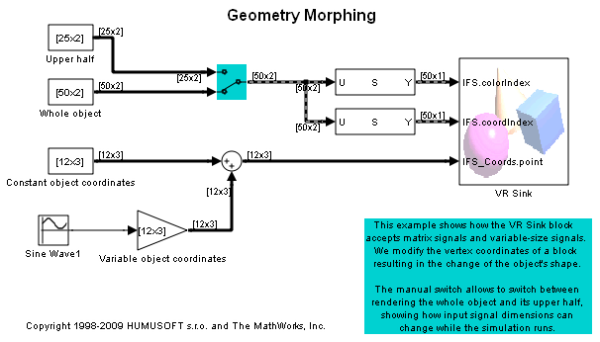
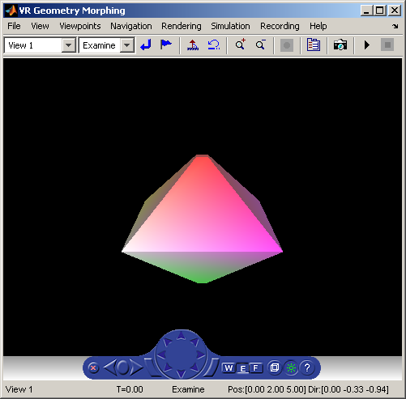

Geometry Morphing
This example shows how the VR Sink block accepts matrix signals and variable-size signals. We modify the vertex coordinates of a block resulting in the change of the object's shape.
The manual switch allows to switch between rendering the whole object and its upper half, showing how input signal dimensions can change while the simulation runs.
 